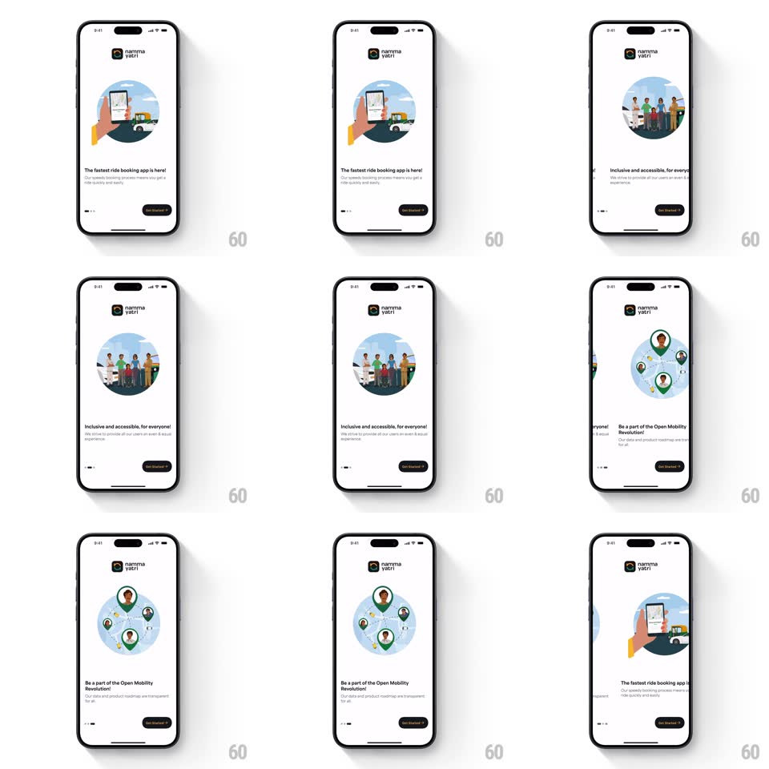

Media
Frame-by-frame

Rebuild this interaction 1:1: Namma Yatri's onboarding carousel - swiping pages slides circular illustrations horizontally with a spring, the page-indicator dots morph as the active page changes, and the headline swaps below.

Rebuild this interaction 1:1: Namma Yatri's onboarding carousel - swiping pages slides circular illustrations horizontally with a spring, the page-indicator dots morph as the active page changes, and the headline swaps below. ## Integration Integration: stack-agnostic spec - springs given as stiffness/damping, timed motions as duration + curve; map every value to your framework and animation library of choice. ## Scene A light onboarding screen: the Namma Yatri logo up top, a large circular illustration per page (booking an auto, a diverse group of riders, driver map pins), a bold headline and a line of copy below, dot indicators bottom-left, and a "Get booked in ->" button bottom-right. ## Motion spec Pattern: horizontal paging carousel with morphing dots, ~400ms per page. - Swipe: pages track the finger 1:1; on release past 30% or with fling, the current page slides out and the next slides in (spring ~320/24, 350ms) with a small overshoot settle. - Illustration: the incoming circle scales from 0.94 to 1 during the settle (200ms). - Dots: the active dot stretches into a pill (width animates, spring ~400/20, 250ms) while the previous pill contracts back to a dot - the morph slides with the paging direction. - Headline: the text block crossfades with a short rise (translateY 10px -> 0 + fade, 250ms) as the page lands. - The logo and button stay fixed; only the carousel region pages. ## Calibration - Only one page is centered at rest - full snap, no half positions. - The dot morph direction matches the swipe direction. ## Reduced motion Crossfade between pages (250ms); dots switch state without morphing. ## Don't miss - Pages can be swiped or paged by the button - both paths use the same spring. - The circular crop of each illustration stays circular through the motion.